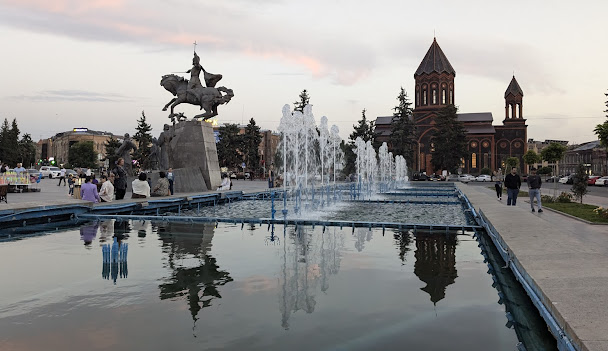
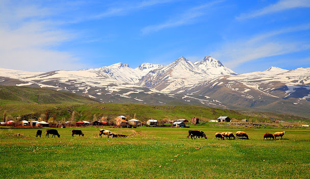
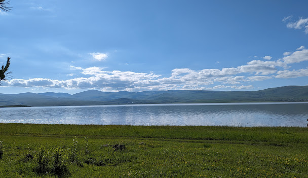

Շիրակ
Շիրակի մարզ, մարզի կարգավիճակ ունեցող վարչատարածքային միավոր Հայաստանում։ Վարչական կենտրոնը Գյումրի քաղաքն է։ Պետական սահմանով արևմուտքից սահմանակից է Թուրքիային, հյուսիսից՝ Վրաստանին, արևելքից սահմանակից է՝ Հայաստանի Լոռու մարզին և հարավից՝ Հայաստանի Արագածոտնի մարզին։ Գտնվում է Հայ Առաքելական Եկեղեցու Շիրակի թեմի հովվապետության ներքո (առաջնորդարանը՝ քաղաք Գյումրիում), սակայն մարզի տարածքում կան զգալի թվով կաթոլիկ հայեր, ինչպես նաև կաթոլիկ գյուղեր։
Աշխարհագրություն
Մարզի տարածքում են գտնվում Արփի լիճ-ջրամբարը, Ախուրյանի ջրամբարի հայկական հատվածը և Մանթաշի ջրամբարը։ Շիրակի մարզի կենտրոնական և հարավային հատվածում տարածվում է Շիրակի դաշտը, իսկ հյուսիսային շրջանում՝ Աշոցքի սարահարթը, միաժամանակ Շիրակի մարզում են տարածվում Փամբակի, Բազումի լեռնաշղթաների, Եղնախաղի, Ջավախքի, Արագածի լեռնազանգվածների մի մասը։ Երկրաբանական կառուցվածքի տեսակետից տարածքը ընդհանուր առմամբ ունի համեմատաբար միատարր հրաբխային կազմություն և երիտասարդ հասակ։ Հայկական լեռնաշխարհի հետ միասին մարզի տարածքն անցել է երկրաբանական զարգացման բարդ ուղի։ Եռանդուն տեկտոնական շարժումները, որոնց շնորհիվ երկրակեղևը ծալքավորվել ու կոտրվել է, տեղի է ունեցել երկրաբանական տարբեր ժամանակաշրջաններում։ Սակայն մարզի ռելիեֆի ձևավորման գործում գլխավոր դերը պատկանում է ալպյան լեռնակազմությանը, երբ տարածքը բարձրացել է ծովի հատակից և թևակոխել ցամաքային զարգացման փուլ։ Հետագայում, շարունակվելով վերընթաց տեկտոնական շարժումները, ձևավորվել են միջին բարձրության լեռներ։ Նեոգենի ժամանակաշրջանի կեսերին տեղի ունեցած հզոր լեռնակազմական պրոցեսների հետևանքով տարածքի շրջակա լեռները դարձել են ավելի բարձր, հովիտները` ավելի խորը։ Այդ ժամանակաշրջանում է, որ այստեղ գոյանում են երկրակեղևի տարբեր ուղղություններով ձգվող Սևան-Շիրակի, Ջավախք-Արագած-Մասիսի և Աշոցքի բեկվածքները
Ֆիզիկա-աշխարհագրական բնութագիր
Շրջանի հարավը զբաղեցնում է Շիրակի դաշտը, հյուսիսը՝ Աշոցքի սարահարթը, որոնք իրարից բաժանվում են Շիրակի լեռնաշղթայով։ Հարավում տարածվում է Թալինի սարավանդը, հյուսիս-արևելքում՝ Շարայի լեռը։ Արևելքում Ջաջուռի (1952 մ) ու Քարախաչի (2273 մ) լեռնանցքներով շրջանը կապվում է Լոռու ֆիզիկաաշխարհագրական շրջանին։ Մակերևույթն անտառազուրկ է, բնորոշ են հրաբխային կոներն ու լավային հոսքերը։ Ձևաբանական տեսակետից ռելիեֆի խոշոր տարրերն են ընդարձակ լեռնազանգվածները, լեռնաշղթաները, լեռնաճյուղերը, որոնք հաճախ ընդմիջվում են հովիտներով։ Լեռնազանգվածների ու լեռնաճյուղերի միջև տեղադրված են տափարակ կամ գոգավոր ընդարձակ տեղամասերը։ Շիրակի մարզի ռելիեֆը սովորաբար բաժանում են երեք խոշոր ենթաշրջանների. 1. Աշոցք-Ջավախքի ենթաշրջան, որի մեջ մտնում են Եղնախաղի հրաբխային լեռնավահանի արևելյան լանջերը` Ախուրյանի աջափնյա սարավանդային մասը, Աշոցքի սարավանդի հատակային հատվածը և Ջավախքի լեռնավահանի արևմտահայաց լանջերը։ 2. Շիրակի դաշտ, որը մարզի մակերևույթի մենախոշոր տարրն 3. Արագածի ենթաշրջան, որը ստորաբաժանվում է` բուն լեռնազանգվածային, արևմտյան սարավանդային, Շարայի լեռնազանգվածային ու սարավանդային բնատեղամասերի Որպես ֆիզիկաաշխարհագրական առանձին միավոր մարզին բնորոշ են բարձրադիր մակերևույթը, կլիմայական խիստ պայմանները, բավարար խոնավությունը, մարգագետնային հարուստ բուսականությունը։ Նրա կենտրոնական մասը զբաղեցնում է Աշոցքի սարավանդը, որը գրեթե բոլոր կողմերից շրջապատված է լեռներով։ Արևելքից սարավանդը եզրավորվում է Ջավախքի, արևմուտքից` Եղնախաղի, հյուսիսից` Չլդրի, հարավից` Շիրակի լեռնաշղթաներով։
  